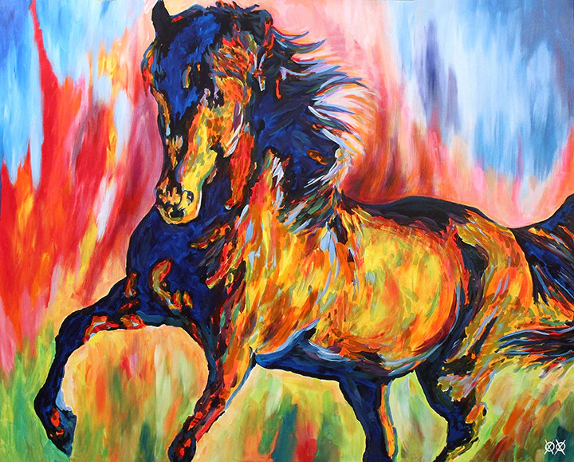
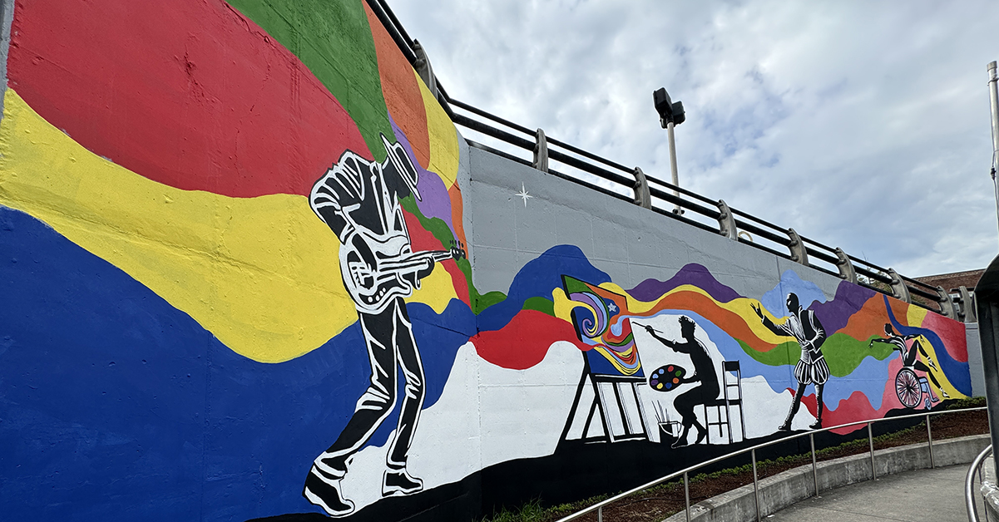
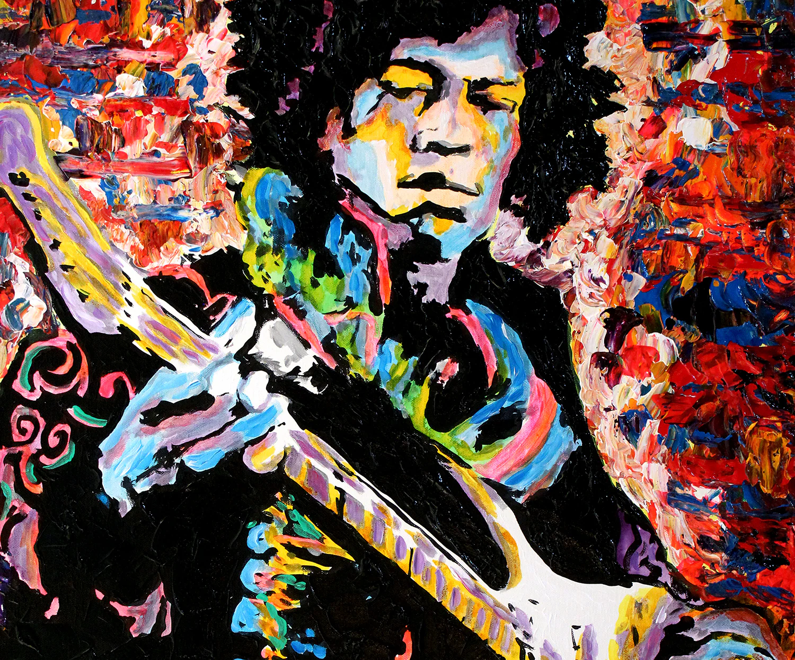

John Bramblitt (born 1971) - American blind painter
Bramblitt lost his sight in 2001 and thereafter developed a method of painting by feeling paint textures and using raised lines to orient himself on the canvas.
He became the world’s first blind muralist (with murals in New York and Dallas) and his art has been sold in over 120 countries.
 